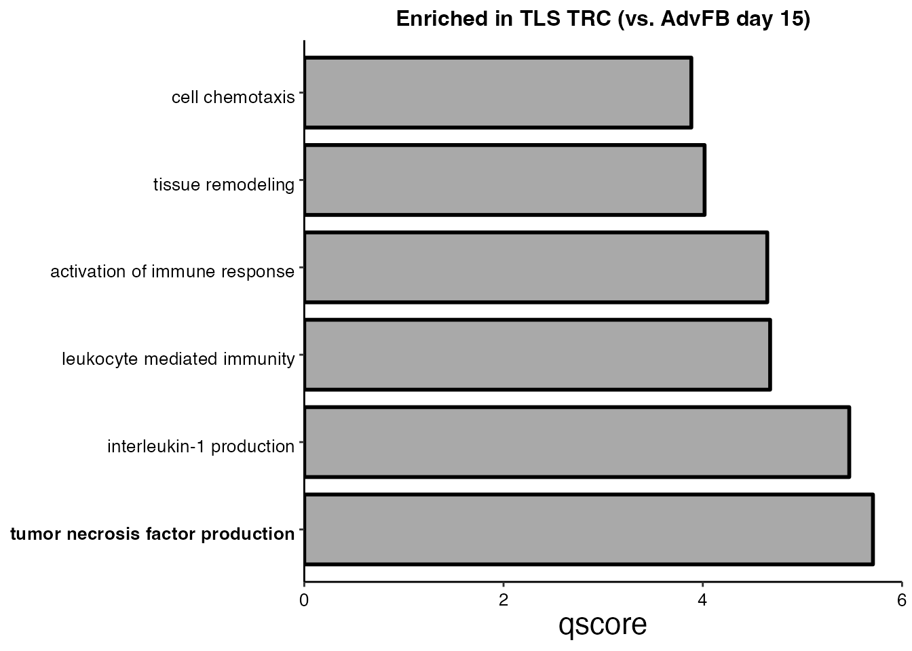
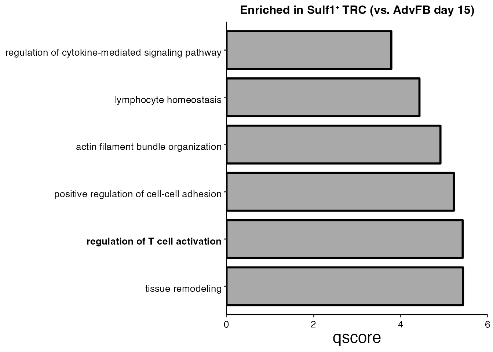
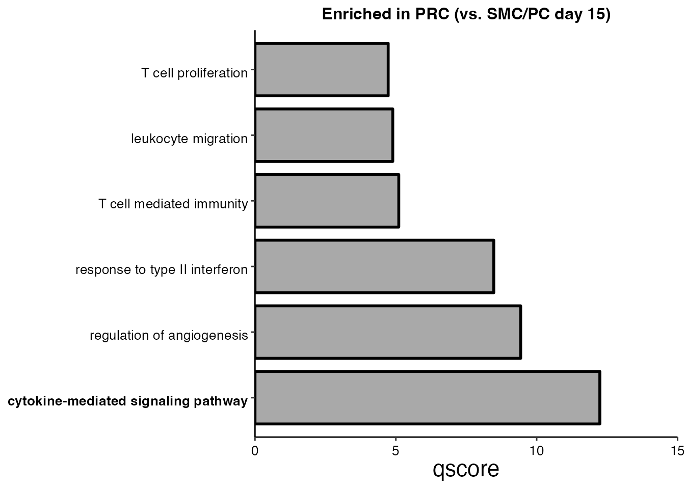

Comparison of naive CCL19-EYFP cells vs mCOV-FIt31-g33 CCL19-EYFP cells
Chrysa Papadopoulou
Last updated: 2024-09-23
Checks: 7 0
Knit directory: CCL19_FRCs_lung_cancer/
This reproducible R Markdown analysis was created with workflowr (version 1.7.1). The Checks tab describes the reproducibility checks that were applied when the results were created. The Past versions tab lists the development history.
Great! Since the R Markdown file has been committed to the Git repository, you know the exact version of the code that produced these results.
Great job! The global environment was empty. Objects defined in the global environment can affect the analysis in your R Markdown file in unknown ways. For reproduciblity it’s best to always run the code in an empty environment.
The command set.seed(20240808) was run prior to running
the code in the R Markdown file. Setting a seed ensures that any results
that rely on randomness, e.g. subsampling or permutations, are
reproducible.
Great job! Recording the operating system, R version, and package versions is critical for reproducibility.
Nice! There were no cached chunks for this analysis, so you can be confident that you successfully produced the results during this run.
Great job! Using relative paths to the files within your workflowr project makes it easier to run your code on other machines.
Great! You are using Git for version control. Tracking code development and connecting the code version to the results is critical for reproducibility.
The results in this page were generated with repository version 05125c2. See the Past versions tab to see a history of the changes made to the R Markdown and HTML files.
Note that you need to be careful to ensure that all relevant files for
the analysis have been committed to Git prior to generating the results
(you can use wflow_publish or
wflow_git_commit). workflowr only checks the R Markdown
file, but you know if there are other scripts or data files that it
depends on. Below is the status of the Git repository when the results
were generated:
Ignored files:
Ignored: .DS_Store
Ignored: analysis/.DS_Store
Ignored: data/Final_submission/
Ignored: data/Human/
Ignored: data/Mouse/
Ignored: data/Public/
Ignored: output/GSEA_AdvFB_SULF1/
Ignored: output/GSEA_AdvFB_TLS/
Ignored: output/GSEA_CCR7_T/
Ignored: output/GSEA_CD8_T/
Ignored: output/GSEA_CYCL_T/
Ignored: output/GSEA_EXH_T/
Ignored: output/GSEA_SMC_PRC/
Untracked files:
Untracked: README.html
Untracked: analysis/.h5seurat
Untracked: analysis/Compare_tumors.Rmd
Untracked: analysis/NSCLC_PDAC_CAFs.Rmd
Untracked: analysis/Seurat_to_SCE.Rmd
Untracked: analysis/compression.Rmd
Untracked: analysis/index_hidden.Rmd
Note that any generated files, e.g. HTML, png, CSS, etc., are not included in this status report because it is ok for generated content to have uncommitted changes.
These are the previous versions of the repository in which changes were
made to the R Markdown (analysis/mcov_R.Rmd) and HTML
(docs/mcov_R.html) files. If you’ve configured a remote Git
repository (see ?wflow_git_remote), click on the hyperlinks
in the table below to view the files as they were in that past version.
| File | Version | Author | Date | Message |
|---|---|---|---|---|
| Rmd | 05125c2 | Pchryssa | 2024-09-23 | CCL19-EYFP cells vs mCOV-FIt31-g33 CCL19-EYFP cells |
Load packages
suppressPackageStartupMessages({
library(here)
library(purrr)
library(dplyr)
library(stringr)
library(patchwork)
library(Seurat)
library(Matrix)
library(gridExtra)
library(gsubfn)
library(ggsci)
library(biomaRt)
library(tidyverse)
library(msigdbr)
library(stats)
library(clusterProfiler)
library(dict)
library(openxlsx)
library(DOSE)
library(enrichplot)
})Set directory
basedir <- here()Read CCL19-EYFP⁺ cell data from naïve lungs and excised LLC-gp33 tumors on day 23
CCL19_EYFP <- readRDS(paste0(basedir,"/data/Mouse/CCL19_EYFP_nonmCOV.rds"))Read CCL19-EYFP⁺ mCOV-FIt31-g33 cell data
CCL19_EYFP_mCOV <- readRDS(paste0(basedir,"/data/Mouse/mCOV.rds"))Feature plots
Cxcl13 LLC naive
FeaturePlot(CCL19_EYFP, reduction = "umap",
features = get_full_gene_name('Cxcl13',CCL19_EYFP),raster=FALSE,
cols=c("lightgrey", "darkred"),min.cutoff = 0, max.cutoff = 6) + ggtitle(paste0("Ccl19-EYFP", "\U207A ", "cells (Naive)"))
Cxcl13 mCOV-FIt31-g33
FeaturePlot(CCL19_EYFP_mCOV, reduction = "umap",
features = get_full_gene_name('Cxcl13',CCL19_EYFP_mCOV),raster=FALSE,
cols=c("lightgrey", "darkred")) + ggtitle(paste0("Ccl19-EYFP", "\U207A ", "cells (mCOV-FIt31-g33)"))
Cr2 mCOV-FIt31-g33
FeaturePlot(CCL19_EYFP_mCOV, reduction = "umap",
features = get_full_gene_name('Cr2',CCL19_EYFP_mCOV),raster=FALSE,
cols=c("lightgrey", "darkred")) + ggtitle(paste0("Ccl19-EYFP", "\U207A ", "cells (mCOV-FIt31-g33)"))
Let’s compare the gene expression between TRC/PRC (d23) and their progenitor subsets (d15) to identify gene programs that may be relevant for their function in supporting the T cell niches
#Set new annotation: Change Smoc1 AdvFB to Cd34 AdvFB
CCL19_EYFP@meta.data$annot[CCL19_EYFP@meta.data$annot == paste0("Smoc1", expression("\u207A "), "AdvFB") ] <- paste0("Cd34", expression("\u207A "), "AdvFB")
progenitors_d15 <- subset(CCL19_EYFP, TimePoint == "d15" & annot %in% c(paste0("Cd34", expression("\u207A "), "AdvFB"),"SMC/PC"))
progenitors_mCOV <- subset(CCL19_EYFP_mCOV, annot %in% c(paste0("Rgs5", expression("\u207A "), "PRC"),paste0("Sulf1", expression("\u207A "), "TRC"),"TLS TRC"))
data_merge <- merge(progenitors_d15, y = c(progenitors_mCOV),
add.cell.ids = c("progenitors_d15","progenitors_mCOV"),
project = "progenitors_d15_mCOV")
#Preprocessing
resolution <- c(0.1, 0.25, 0.4, 0.6,0.8, 1.)
data_merge <- preprocessing(data_merge,resolution)Modularity Optimizer version 1.3.0 by Ludo Waltman and Nees Jan van Eck
Number of nodes: 2779
Number of edges: 94713
Running Louvain algorithm...
Maximum modularity in 10 random starts: 0.9629
Number of communities: 4
Elapsed time: 0 seconds
Modularity Optimizer version 1.3.0 by Ludo Waltman and Nees Jan van Eck
Number of nodes: 2779
Number of edges: 94713
Running Louvain algorithm...
Maximum modularity in 10 random starts: 0.9246
Number of communities: 6
Elapsed time: 0 seconds
Modularity Optimizer version 1.3.0 by Ludo Waltman and Nees Jan van Eck
Number of nodes: 2779
Number of edges: 94713
Running Louvain algorithm...
Maximum modularity in 10 random starts: 0.8931
Number of communities: 10
Elapsed time: 0 seconds
Modularity Optimizer version 1.3.0 by Ludo Waltman and Nees Jan van Eck
Number of nodes: 2779
Number of edges: 94713
Running Louvain algorithm...
Maximum modularity in 10 random starts: 0.8597
Number of communities: 12
Elapsed time: 0 seconds
Modularity Optimizer version 1.3.0 by Ludo Waltman and Nees Jan van Eck
Number of nodes: 2779
Number of edges: 94713
Running Louvain algorithm...
Maximum modularity in 10 random starts: 0.8353
Number of communities: 14
Elapsed time: 0 seconds
Modularity Optimizer version 1.3.0 by Ludo Waltman and Nees Jan van Eck
Number of nodes: 2779
Number of edges: 94713
Running Louvain algorithm...
Maximum modularity in 10 random starts: 0.8163
Number of communities: 14
Elapsed time: 0 secondsSave merged data progenitors Day 15 (naive) and Day 23 (mCOV-FIt31-g33)
#saveRDS(data_merge,paste0(basedir,"/data/Human/progenitors_d15_mCOV.rds"))Pathway analysis
CD34⁺ AdvFB (Day 15) vs TLS TRC (Day 23) (Supplementary Figure 10C)
# Step 1 : Set output directory
subDir <- "GSEA_AdvFB_TLS/"
saving_path <- paste0(basedir,"/output/")
final_dir <- file.path(saving_path, subDir)
dir.create(final_dir, showWarnings = FALSE,recursive = TRUE)
map_df <- ExtractMouseGeneSets(final_dir)
# Step 2: Customize parameters
httr::set_config(httr::config(ssl_verifypeer = FALSE))
organism <- "org.Mm.eg.db"
disease_phase <- "d15vsd23_AdvFB_TLS"
datatype <- "SYMBOL"
advfb_tls <-subset(data_merge, annot %in% c(paste0("Cd34", expression("\u207A "), "AdvFB"),"TLS TRC"))
Idents(advfb_tls) <- advfb_tls$annot
DEmarkers <-FindAllMarkers(advfb_tls, only.pos=T, logfc.threshold = 0.1,
min.pct = 0.1)
Vec <-unique(advfb_tls$annot)
EnrichParameters_TLS <-customize_parameters(Vec,DEmarkers,organism,datatype,disease_phase,saving_path) [1] "Finish Enrichment_Analysis for GO Cd34⁺ AdvFB"
[1] "Finish Enrichment_Analysis for GO TLS TRC"# Step 3: Enrichment Analysis
for (i in seq(1,length(EnrichParameters_TLS$enrichcl_list))){
terms<- EnrichParameters_TLS$enrichcl_list[[i]]
# Filter on the most significant pathways (keep rows where p.adjust<= 0.05)
terms<- terms@result[terms@result$p.adjust <= 0.05,]
population <- Vec[i]
population<- gsub("/", "_", population)
write.xlsx(terms, paste0(final_dir,"/","GO_Pathways_",population,".xlsx"),row.names = TRUE)
}
#Step 4: Plot enriched pathways
pathways <-c("cell chemotaxis", "tissue remodeling","activation of immune response",
"leukocyte mediated immunity", "interleukin-1 production", "tumor necrosis factor production")
TLS_terms <- EnrichParameters_TLS$enrichcl_list[[2]]@result
selec_pathways <- TLS_terms[TLS_terms$Description %in% pathways,]
selec_pathways$Description <- factor(selec_pathways$Description, levels = rev(pathways))
selec_pathways <- selec_pathways[order(selec_pathways$Description), ]
ggplot(data=selec_pathways, aes(x=Description, y=qscore, fill = analysis)) + xlab(NULL) +
geom_bar(stat="identity",position="dodge",colour = "black",show.legend = FALSE, width= 0.8, size = 1 ) + coord_flip() +
scale_y_continuous(expand = expansion(c(0,0)), limits = c(0.0, 6),breaks = c(0,2,4,6)) +
scale_x_discrete(labels = function(x) stringr::str_wrap(x, width = 80)) +
theme( legend.justification = "top",
plot.title = element_text(hjust = 0.5,size = 12,face="bold"),axis.line = element_line(colour = "black"),
panel.grid.major = element_blank(),
panel.grid.minor = element_blank(),
axis.text.x = element_text(angle = 0, vjust = 0.5,colour = "black", size = 10),
axis.text.y = element_text(angle = 0, vjust = 0.8,colour = "black", size = 10, face=ifelse(levels(selec_pathways$Description)=="tumor necrosis factor production","bold","plain")),
axis.title.y = element_text(size = rel(2), angle = 45),
axis.title.x = element_text(size = rel(1.5), angle = 0),
axis.text = element_text(size = 8),
panel.background = element_blank(), legend.position = "none") +
scale_fill_manual(values = "dark gray") + ggtitle("Enriched in TLS TRC (vs. AdvFB day 15)")
CD34⁺ AdvFB (Day 15) vs Sulf1⁺ TRC (Day 23) (Supplementary Figure 10D)
# Step 1 : Set output directory
subDir <- "GSEA_AdvFB_SULF1/"
saving_path <- paste0(basedir,"/output/")
final_dir <- file.path(saving_path, subDir)
dir.create(final_dir, showWarnings = FALSE,recursive = TRUE)
map_df <- ExtractMouseGeneSets(final_dir)
# Step 2: Customize parameters
httr::set_config(httr::config(ssl_verifypeer = FALSE))
organism <- "org.Mm.eg.db"
disease_phase <- "d15vsd23_AdvFB_SULF1"
datatype <- "SYMBOL"
AdvFB_sulf1 <-subset(data_merge, annot %in% c(paste0("Cd34", expression("\u207A "), "AdvFB"),paste0("Sulf1", expression("\u207A "), "TRC")))
Idents(AdvFB_sulf1) <- AdvFB_sulf1$annot
DEmarkers <-FindAllMarkers(AdvFB_sulf1, only.pos=T, logfc.threshold = 0.1,
min.pct = 0.1)
Vec <-unique(AdvFB_sulf1$annot)
EnrichParameters_Sulf1 <-customize_parameters(Vec,DEmarkers,organism,datatype,disease_phase,saving_path) [1] "Finish Enrichment_Analysis for GO Cd34⁺ AdvFB"
[1] "Finish Enrichment_Analysis for GO Sulf1⁺ TRC"# Step 3: Enrichment Analysis
for (i in seq(1,length(EnrichParameters_Sulf1$enrichcl_list))){
terms<- EnrichParameters_Sulf1$enrichcl_list[[i]]
# Filter on the most significant pathways (keep rows where p.adjust<= 0.05)
terms<- terms@result[terms@result$p.adjust <= 0.05,]
population <- Vec[i]
population<- gsub("/", "_", population)
write.xlsx(terms, paste0(final_dir,"/","GO_Pathways_",population,".xlsx"),row.names = TRUE)
}
#Step 4: Plot enriched pathways
pathways <-c("regulation of cytokine-mediated signaling pathway", "lymphocyte homeostasis","actin filament bundle organization",
"positive regulation of cell-cell adhesion", "regulation of T cell activation", "tissue remodeling")
TRC_term_sulf1 <- EnrichParameters_Sulf1$enrichcl_list[[2]]@result
selec_pathways <- TRC_term_sulf1[TRC_term_sulf1$Description %in% pathways,]
selec_pathways$Description <- factor(selec_pathways$Description, levels = rev(pathways))
selec_pathways <- selec_pathways[order(selec_pathways$Description), ]
ggplot(data=selec_pathways, aes(x=Description, y=qscore, fill = analysis)) + xlab(NULL) +
geom_bar(stat="identity",position="dodge",colour = "black",show.legend = FALSE, width= 0.8, size = 1 ) + coord_flip() +
scale_y_continuous(expand = expansion(c(0,0)), limits = c(0.0, 6),breaks = c(0,2,4,6)) +
scale_x_discrete(labels = function(x) stringr::str_wrap(x, width = 80)) +
theme( legend.justification = "top",
plot.title = element_text(hjust = 0.5,size = 12,face="bold"),axis.line = element_line(colour = "black"),
panel.grid.major = element_blank(),
panel.grid.minor = element_blank(),
axis.text.x = element_text(angle = 0, vjust = 0.5,colour = "black", size = 10),
axis.text.y = element_text(angle = 0, vjust = 0.8,colour = "black", size = 10, face=ifelse(levels(selec_pathways$Description)=="regulation of T cell activation","bold","plain")),
axis.title.y = element_text(size = rel(2), angle = 45),
axis.title.x = element_text(size = rel(1.5), angle = 0),
axis.text = element_text(size = 8),
panel.background = element_blank(), legend.position = "none") +
scale_fill_manual(values = "dark gray") + ggtitle(paste0("Enriched in Sulf1", "\U207A ", "TRC (vs. AdvFB day 15)")) 
SMC/PC (Day 15) vs PRC (Day 23) (Supplementary Figure 10E)
# Step 1 : Set output directory
subDir <- "GSEA_SMC_PRC/"
saving_path <- paste0(basedir,"/output/")
final_dir <- file.path(saving_path, subDir)
dir.create(final_dir, showWarnings = FALSE,recursive = TRUE)
map_df <- ExtractMouseGeneSets(saving_path)
# Step 2: Customize parameters
httr::set_config(httr::config(ssl_verifypeer = FALSE))
organism <- "org.Mm.eg.db"
disease_phase <- "d15vsd23_SMC_PRC"
datatype <- "SYMBOL"
smc_prc <-subset(data_merge, annot %in% c("SMC/PC", paste0("Rgs5", expression("\u207A "), "PRC")))
Idents(smc_prc) <- smc_prc$annot
DEmarkers <-FindAllMarkers(smc_prc, only.pos=T, logfc.threshold = 0.1,
min.pct = 0.1)
Vec <-unique(smc_prc$annot)
EnrichParameters <-customize_parameters(Vec,DEmarkers,organism,datatype,disease_phase,saving_path) [1] "Finish Enrichment_Analysis for GO SMC/PC"
[1] "Finish Enrichment_Analysis for GO Rgs5⁺ PRC"# Step 3: Enrichment Analysis
for (i in seq(1,length(EnrichParameters$enrichcl_list))){
terms<- EnrichParameters$enrichcl_list[[i]]
# Filter on the most significant pathways (keep rows where p.adjust<= 0.05)
terms<- terms@result[terms@result$p.adjust <= 0.05,]
population <- Vec[i]
population<- gsub("/", "_", population)
write.xlsx(terms, paste0(final_dir,"/","GO_Pathways_",population,".xlsx"),row.names = TRUE)
}
# Step 4: Plot enriched pathways
pathways <-c("T cell proliferation", "leukocyte migration","T cell mediated immunity",
"response to type II interferon", "regulation of angiogenesis", "cytokine-mediated signaling pathway")
PRC_terms <- EnrichParameters$enrichcl_list[[2]]@result
selec_pathways <- PRC_terms[PRC_terms$Description %in% pathways,]
selec_pathways$Description <- factor(selec_pathways$Description, levels = rev(pathways))
selec_pathways <- selec_pathways[order(selec_pathways$Description), ]
ggplot(data=selec_pathways, aes(x=Description, y=qscore, fill = analysis)) + xlab(NULL) +
geom_bar(stat="identity",position="dodge",colour = "black",show.legend = FALSE, width= 0.8, size = 1 ) + coord_flip() +
scale_y_continuous(expand = expansion(c(0,0)), limits = c(0.0, 15),breaks = c(0,5,10,15)) +
scale_x_discrete(labels = function(x) stringr::str_wrap(x, width = 80)) +
theme( legend.justification = "top",
plot.title = element_text(hjust = 0.5,size = 12,face="bold"),axis.line = element_line(colour = "black"),
panel.grid.major = element_blank(),
panel.grid.minor = element_blank(),
axis.text.x = element_text(angle = 0, vjust = 0.5,colour = "black", size = 10),
axis.text.y = element_text(angle = 0, vjust = 0.8,colour = "black", size = 10, face=ifelse(levels(selec_pathways$Description)=="cytokine-mediated signaling pathway","bold","plain")),
axis.title.y = element_text(size = rel(2), angle = 45),
axis.title.x = element_text(size = rel(1.5), angle = 0),
axis.text = element_text(size = 8),
panel.background = element_blank(), legend.position = "none") +
scale_fill_manual(values = "dark gray") + ggtitle("Enriched in PRC (vs. SMC/PC day 15)")
Gene-Concept Networks
Enriched in TLS TRC (vs. AdvFB day 15) (Supplementary Figure 10F)
pathways <- c("tumor necrosis factor production")
cnetplot(EnrichParameters_TLS$enrichcl_list[[2]], node_label="gene", layout = "kk", showCategory = pathways,
max.overlaps=Inf,color.params = list(gene ="black",
category = "red",
edge = TRUE),
cex.params = list(category_label = 0.0000001,
label_gene = 0.000001, gene_label= 0.6)) + theme(legend.text=element_text(size=8))
Enriched in Sulf1⁺ TRC (vs. AdvFB day 15) (Supplementary Figure 10G)
pathways <- c("regulation of T cell activation")
cnetplot(EnrichParameters_Sulf1$enrichcl_list[[2]], node_label="gene", layout = "kk", showCategory = pathways,
max.overlaps=Inf,color.params = list(gene ="black",
category = "red",
edge = TRUE),
cex.params = list(category_label = 0.0000001,
label_gene = 0.000001, gene_label= 0.6)) + theme(legend.text=element_text(size=8))
Session info
sessionInfo()R version 4.3.1 (2023-06-16)
Platform: aarch64-apple-darwin20 (64-bit)
Running under: macOS Ventura 13.6.9
Matrix products: default
BLAS: /Library/Frameworks/R.framework/Versions/4.3-arm64/Resources/lib/libRblas.0.dylib
LAPACK: /Library/Frameworks/R.framework/Versions/4.3-arm64/Resources/lib/libRlapack.dylib; LAPACK version 3.11.0
locale:
[1] en_US.UTF-8/en_US.UTF-8/en_US.UTF-8/C/en_US.UTF-8/en_US.UTF-8
time zone: Europe/Zurich
tzcode source: internal
attached base packages:
[1] stats graphics grDevices utils datasets methods base
other attached packages:
[1] enrichplot_1.20.0 DOSE_3.26.1 openxlsx_4.2.5.2
[4] dict_0.10.0 clusterProfiler_4.8.2 msigdbr_7.5.1
[7] lubridate_1.9.2 forcats_1.0.0 readr_2.1.4
[10] ggplot2_3.4.2 tidyverse_2.0.0 biomaRt_2.56.1
[13] ggsci_3.0.0 gsubfn_0.7 proto_1.0.0
[16] gridExtra_2.3 Matrix_1.6-0 SeuratObject_4.1.3
[19] Seurat_4.3.0.1 patchwork_1.1.2 stringr_1.5.0
[22] dplyr_1.1.2 purrr_1.0.1 here_1.0.1
[25] magrittr_2.0.3 circlize_0.4.15 tidyr_1.3.0
[28] tibble_3.2.1 workflowr_1.7.1
loaded via a namespace (and not attached):
[1] fs_1.6.3 matrixStats_1.0.0 spatstat.sparse_3.0-2
[4] bitops_1.0-7 HDO.db_0.99.1 httr_1.4.6
[7] RColorBrewer_1.1-3 tools_4.3.1 sctransform_0.3.5
[10] utf8_1.2.3 R6_2.5.1 lazyeval_0.2.2
[13] uwot_0.1.16 withr_2.5.0 sp_2.0-0
[16] prettyunits_1.1.1 progressr_0.13.0 textshaping_0.3.6
[19] cli_3.6.1 Biobase_2.60.0 spatstat.explore_3.2-1
[22] scatterpie_0.2.1 labeling_0.4.2 sass_0.4.7
[25] spatstat.data_3.0-1 ggridges_0.5.4 pbapply_1.7-2
[28] systemfonts_1.0.4 yulab.utils_0.0.6 gson_0.1.0
[31] parallelly_1.36.0 limma_3.56.2 rstudioapi_0.15.0
[34] RSQLite_2.3.1 generics_0.1.3 gridGraphics_0.5-1
[37] shape_1.4.6 ica_1.0-3 spatstat.random_3.1-5
[40] zip_2.3.0 GO.db_3.17.0 fansi_1.0.4
[43] S4Vectors_0.38.1 abind_1.4-5 lifecycle_1.0.3
[46] whisker_0.4.1 yaml_2.3.7 qvalue_2.32.0
[49] BiocFileCache_2.8.0 Rtsne_0.16 grid_4.3.1
[52] blob_1.2.4 promises_1.2.0.1 crayon_1.5.2
[55] miniUI_0.1.1.1 lattice_0.21-8 cowplot_1.1.1
[58] KEGGREST_1.40.0 pillar_1.9.0 knitr_1.43
[61] fgsea_1.26.0 tcltk_4.3.1 future.apply_1.11.0
[64] codetools_0.2-19 fastmatch_1.1-4 leiden_0.4.3
[67] glue_1.6.2 getPass_0.2-4 downloader_0.4
[70] ggfun_0.1.1 data.table_1.14.8 vctrs_0.6.3
[73] png_0.1-8 treeio_1.24.3 org.Mm.eg.db_3.17.0
[76] gtable_0.3.3 cachem_1.0.8 xfun_0.39
[79] mime_0.12 tidygraph_1.2.3 survival_3.5-5
[82] ellipsis_0.3.2 fitdistrplus_1.1-11 ROCR_1.0-11
[85] nlme_3.1-162 ggtree_3.8.2 bit64_4.0.5
[88] progress_1.2.2 filelock_1.0.2 RcppAnnoy_0.0.21
[91] GenomeInfoDb_1.36.1 rprojroot_2.0.3 bslib_0.5.0
[94] irlba_2.3.5.1 KernSmooth_2.23-22 colorspace_2.1-0
[97] BiocGenerics_0.46.0 DBI_1.1.3 tidyselect_1.2.0
[100] processx_3.8.2 bit_4.0.5 compiler_4.3.1
[103] curl_5.0.1 git2r_0.33.0 xml2_1.3.5
[106] plotly_4.10.2 shadowtext_0.1.2 scales_1.2.1
[109] lmtest_0.9-40 callr_3.7.3 rappdirs_0.3.3
[112] digest_0.6.33 goftest_1.2-3 spatstat.utils_3.1-0
[115] rmarkdown_2.23 XVector_0.40.0 htmltools_0.5.5
[118] pkgconfig_2.0.3 highr_0.10 dbplyr_2.3.3
[121] fastmap_1.1.1 rlang_1.1.1 GlobalOptions_0.1.2
[124] htmlwidgets_1.6.2 shiny_1.7.4.1 farver_2.1.1
[127] jquerylib_0.1.4 zoo_1.8-12 jsonlite_1.8.7
[130] BiocParallel_1.34.2 GOSemSim_2.26.1 RCurl_1.98-1.12
[133] GenomeInfoDbData_1.2.10 ggplotify_0.1.1 munsell_0.5.0
[136] Rcpp_1.0.11 ape_5.7-1 babelgene_22.9
[139] viridis_0.6.4 reticulate_1.36.1 stringi_1.7.12
[142] ggraph_2.1.0 zlibbioc_1.46.0 MASS_7.3-60
[145] plyr_1.8.8 parallel_4.3.1 listenv_0.9.0
[148] ggrepel_0.9.3 deldir_1.0-9 Biostrings_2.68.1
[151] graphlayouts_1.0.0 splines_4.3.1 tensor_1.5
[154] hms_1.1.3 ps_1.7.5 igraph_1.5.0.1
[157] spatstat.geom_3.2-4 reshape2_1.4.4 stats4_4.3.1
[160] XML_3.99-0.14 evaluate_0.21 tzdb_0.4.0
[163] tweenr_2.0.2 httpuv_1.6.11 RANN_2.6.1
[166] polyclip_1.10-4 future_1.33.0 scattermore_1.2
[169] ggforce_0.4.1 xtable_1.8-4 tidytree_0.4.4
[172] later_1.3.1 ragg_1.2.5 viridisLite_0.4.2
[175] aplot_0.1.10 memoise_2.0.1 AnnotationDbi_1.62.2
[178] IRanges_2.34.1 cluster_2.1.4 timechange_0.2.0
[181] globals_0.16.2 date()[1] "Mon Sep 23 21:58:43 2024"
sessionInfo()R version 4.3.1 (2023-06-16)
Platform: aarch64-apple-darwin20 (64-bit)
Running under: macOS Ventura 13.6.9
Matrix products: default
BLAS: /Library/Frameworks/R.framework/Versions/4.3-arm64/Resources/lib/libRblas.0.dylib
LAPACK: /Library/Frameworks/R.framework/Versions/4.3-arm64/Resources/lib/libRlapack.dylib; LAPACK version 3.11.0
locale:
[1] en_US.UTF-8/en_US.UTF-8/en_US.UTF-8/C/en_US.UTF-8/en_US.UTF-8
time zone: Europe/Zurich
tzcode source: internal
attached base packages:
[1] stats graphics grDevices utils datasets methods base
other attached packages:
[1] enrichplot_1.20.0 DOSE_3.26.1 openxlsx_4.2.5.2
[4] dict_0.10.0 clusterProfiler_4.8.2 msigdbr_7.5.1
[7] lubridate_1.9.2 forcats_1.0.0 readr_2.1.4
[10] ggplot2_3.4.2 tidyverse_2.0.0 biomaRt_2.56.1
[13] ggsci_3.0.0 gsubfn_0.7 proto_1.0.0
[16] gridExtra_2.3 Matrix_1.6-0 SeuratObject_4.1.3
[19] Seurat_4.3.0.1 patchwork_1.1.2 stringr_1.5.0
[22] dplyr_1.1.2 purrr_1.0.1 here_1.0.1
[25] magrittr_2.0.3 circlize_0.4.15 tidyr_1.3.0
[28] tibble_3.2.1 workflowr_1.7.1
loaded via a namespace (and not attached):
[1] fs_1.6.3 matrixStats_1.0.0 spatstat.sparse_3.0-2
[4] bitops_1.0-7 HDO.db_0.99.1 httr_1.4.6
[7] RColorBrewer_1.1-3 tools_4.3.1 sctransform_0.3.5
[10] utf8_1.2.3 R6_2.5.1 lazyeval_0.2.2
[13] uwot_0.1.16 withr_2.5.0 sp_2.0-0
[16] prettyunits_1.1.1 progressr_0.13.0 textshaping_0.3.6
[19] cli_3.6.1 Biobase_2.60.0 spatstat.explore_3.2-1
[22] scatterpie_0.2.1 labeling_0.4.2 sass_0.4.7
[25] spatstat.data_3.0-1 ggridges_0.5.4 pbapply_1.7-2
[28] systemfonts_1.0.4 yulab.utils_0.0.6 gson_0.1.0
[31] parallelly_1.36.0 limma_3.56.2 rstudioapi_0.15.0
[34] RSQLite_2.3.1 generics_0.1.3 gridGraphics_0.5-1
[37] shape_1.4.6 ica_1.0-3 spatstat.random_3.1-5
[40] zip_2.3.0 GO.db_3.17.0 fansi_1.0.4
[43] S4Vectors_0.38.1 abind_1.4-5 lifecycle_1.0.3
[46] whisker_0.4.1 yaml_2.3.7 qvalue_2.32.0
[49] BiocFileCache_2.8.0 Rtsne_0.16 grid_4.3.1
[52] blob_1.2.4 promises_1.2.0.1 crayon_1.5.2
[55] miniUI_0.1.1.1 lattice_0.21-8 cowplot_1.1.1
[58] KEGGREST_1.40.0 pillar_1.9.0 knitr_1.43
[61] fgsea_1.26.0 tcltk_4.3.1 future.apply_1.11.0
[64] codetools_0.2-19 fastmatch_1.1-4 leiden_0.4.3
[67] glue_1.6.2 getPass_0.2-4 downloader_0.4
[70] ggfun_0.1.1 data.table_1.14.8 vctrs_0.6.3
[73] png_0.1-8 treeio_1.24.3 org.Mm.eg.db_3.17.0
[76] gtable_0.3.3 cachem_1.0.8 xfun_0.39
[79] mime_0.12 tidygraph_1.2.3 survival_3.5-5
[82] ellipsis_0.3.2 fitdistrplus_1.1-11 ROCR_1.0-11
[85] nlme_3.1-162 ggtree_3.8.2 bit64_4.0.5
[88] progress_1.2.2 filelock_1.0.2 RcppAnnoy_0.0.21
[91] GenomeInfoDb_1.36.1 rprojroot_2.0.3 bslib_0.5.0
[94] irlba_2.3.5.1 KernSmooth_2.23-22 colorspace_2.1-0
[97] BiocGenerics_0.46.0 DBI_1.1.3 tidyselect_1.2.0
[100] processx_3.8.2 bit_4.0.5 compiler_4.3.1
[103] curl_5.0.1 git2r_0.33.0 xml2_1.3.5
[106] plotly_4.10.2 shadowtext_0.1.2 scales_1.2.1
[109] lmtest_0.9-40 callr_3.7.3 rappdirs_0.3.3
[112] digest_0.6.33 goftest_1.2-3 spatstat.utils_3.1-0
[115] rmarkdown_2.23 XVector_0.40.0 htmltools_0.5.5
[118] pkgconfig_2.0.3 highr_0.10 dbplyr_2.3.3
[121] fastmap_1.1.1 rlang_1.1.1 GlobalOptions_0.1.2
[124] htmlwidgets_1.6.2 shiny_1.7.4.1 farver_2.1.1
[127] jquerylib_0.1.4 zoo_1.8-12 jsonlite_1.8.7
[130] BiocParallel_1.34.2 GOSemSim_2.26.1 RCurl_1.98-1.12
[133] GenomeInfoDbData_1.2.10 ggplotify_0.1.1 munsell_0.5.0
[136] Rcpp_1.0.11 ape_5.7-1 babelgene_22.9
[139] viridis_0.6.4 reticulate_1.36.1 stringi_1.7.12
[142] ggraph_2.1.0 zlibbioc_1.46.0 MASS_7.3-60
[145] plyr_1.8.8 parallel_4.3.1 listenv_0.9.0
[148] ggrepel_0.9.3 deldir_1.0-9 Biostrings_2.68.1
[151] graphlayouts_1.0.0 splines_4.3.1 tensor_1.5
[154] hms_1.1.3 ps_1.7.5 igraph_1.5.0.1
[157] spatstat.geom_3.2-4 reshape2_1.4.4 stats4_4.3.1
[160] XML_3.99-0.14 evaluate_0.21 tzdb_0.4.0
[163] tweenr_2.0.2 httpuv_1.6.11 RANN_2.6.1
[166] polyclip_1.10-4 future_1.33.0 scattermore_1.2
[169] ggforce_0.4.1 xtable_1.8-4 tidytree_0.4.4
[172] later_1.3.1 ragg_1.2.5 viridisLite_0.4.2
[175] aplot_0.1.10 memoise_2.0.1 AnnotationDbi_1.62.2
[178] IRanges_2.34.1 cluster_2.1.4 timechange_0.2.0
[181] globals_0.16.2